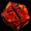
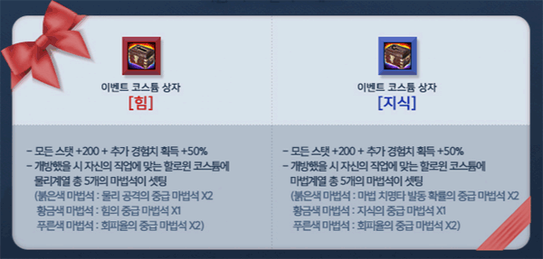

韓国 2015年6月10日アップデート
※韓国公式と韓国人プレイヤーから頂いた情報を基にしています。誤訳や韓国独自仕様の可能性もありますので、予めご了承下さい。2015年6月10日 韓国アップデートの変更内容一覧
ミラーマップ実装
クレスト合成ボックス実装
12周年記念イベント
ミラーマップ実装
人気狩場の混雑解消のため、パーティーボスモンスターのいるマップにミラーマップが実装されました。
現在、パーティーボスモンスターが様々なマップに出現するイベントが開催されており、古都ブルンネンシュティグのイベントテレポーター（82.112）からイベント対象マップへ移動することができます。

 |
パーティーボスモンスターのLv帯を選択 |
 |
? Lv.620 ビックマウスダンジョン Ｂ４ （ラットキング） を選択 |
 |
1万Gを消費してビックマウスダンジョン Ｂ４（63.56）へ移動。 移動した先にいる次元移動人にて |
 |
?ミラーフィールド-1 ビックマウスダンジョンＢ４ ?ミラーフィールド-2 ビックマウスダンジョンＢ４ を選択、1万Gを払ってミラーマップへ移動。 |
 |
ミラーマップでは、露店・場所記憶・コーリング・帰還アイテムなどを使用したマップ移動不可。 ミラーマップから移動したい場合は、 次元移動人にて ?オリジナルフィールド を選択、 1万Gを払って一旦オリジナルマップへ戻ります。 |
  |
2015.6.16アップデートにて日本で実装されたマップ以外にも、フォーリン望楼 地下など全てのパーティーボスモンスターマップ、海の神殿 Ｂ３などの狩場、メインクエスト関連マップにも次元移動人が配置され、ミラーマップが実装されています。 |
9月17日第一次大型アップデート「ミラーダンジョンの追加」にて、日本でもこれらのミラーダンジョンが追加実装されるものと思われます。
| 日本未実装ミラーダンジョン一覧 | |
|---|---|
| マップ | メインクエスト関連 |
| ガディウス大砂漠 / デフヒルズ北側 | 1-8-7 ゴブリン50匹 |
| バヘル台地 / エルベルグ山脈西部地域 | 2-2-1 リプリートマーキ |
| ソゴム山脈赤山 | 2-2-2 殺人蚊の群れ60匹 |
| 中央プラトン街道 / グレートフォレスト入口付近 | 2-2-4 毒スパイダー,スパイダー 2-10-3 毒スパイダー |
| 東プラトン街道 / 道の中間地点 | 2-3-1 シーフ50匹 |
| 西プラトン街道 / グレートフォレスト入口 | 2-8-4 ラボス |
| ナラダ平原の沼地帯 / ノーススワンプ | 3-2-2 ミチバチ100匹 3-9-2 バッファロー10匹 |
| 地下界補給倉庫 | 3-3-2 モンスター100匹 |
| 半島の海辺 | 3-6-3 ビッグシェル 4-2-1 ビッグシェル 5-3-1 ビッグシェル |
| マップ | 狩場 Lv帯 |
| 東プラトン街道 / イースタンブリッジ付近 | Lv1〜15 |
| 東プラトン街道 / エルベルグ山脈 峠 | Lv25〜40 |
| エルベルグ山脈 / ハノブ西部地域 | Lv30〜50 |
| バヘル大河 / 東バヘル川 | Lv30〜79 |
| クェレスプリング湖 | Lv37〜58 |
| 南フォーリンロード / テレット・トンネル出口付近 | Lv40〜46 |
| 南フォーリンロード / エルン山南部地域 | Lv50〜62 |
| ルリリバー / 川河口 | Lv53〜85 |
| 北フォーリンロード / ネイダック平原地帯 | Lv60〜80 |
| 北フォーリンロード / ビガプール南部地域 | Lv68〜80 |
| ミルトリムの道 / シュトラセラト入口付近 | Lv70〜85 |
| ネイダック平原 / ラカリフサ北部地域 | Lv90〜105 |
| ソゴム山脈 赤山登山路 | Lv110〜120 |
| ゴリマ沼地 | Lv140〜155 |
| 魔法傭兵の墓 Ｂ２ | Lv160〜170 |
| パブル鉱山 Ｂ１ | Lv175〜190 |
| 海の神殿 Ｂ３ | Lv180〜200 |
| 海の神殿 Ｂ４ | Lv210〜290 |
| 過ぎた栄光の展示場 | Lv260〜270 |
| ハンヒ山脈 / ドレム川付近 | Lv260〜280 |
| レッドアイ秘密基地 Ｂ２ | Lv220〜240 |
| レッドアイ秘密基地 Ｂ３ | Lv240〜260 |
| レッドアイ秘密基地 Ｂ４ | Lv260〜280 |
| レッドアイ秘密基地 Ｂ５ | Lv280〜290 |
| レッドアイ秘密基地 Ｂ６ | Lv300〜320 |
| レッドアイ倉庫 | Lv320〜340 |
| デフヒルズ古代遺跡 B1 | Lv320〜510 |
| パブル鉱山 Ｂ２ | Lv340〜370 |
| ガディウス大砂漠 / モリネルタワー付近 | Lv345〜360 |
| デフヒルズ小さな洞窟 Ｂ１ | Lv375〜405 |
| デフヒルズ小さな洞窟 Ｂ２ | Lv405〜435 |
| ダークエルフ王宮への近道 | Lv435〜520 |
| 隠された収容所 | Lv500〜550 |
| ダメルの地下迷宮 B1 | Lv540〜550 |
| 埋もれた地下別荘 B3 | Lv600〜610 |
| モリネルタワー 地上４階 | Lv610〜620 |
| ガルカス悪魔軍集結地 Ｂ２ | Lv625〜650 |
| 疑問の森 北西部 | Lv665〜700 |
| 時の森2層目 | Lv670〜690 |
| 神秘の洞窟 Ｂ２ | Lv680〜710 |
| マップ | パーティーボスモンスター（Lv） |
| 廃坑 Ｂ１０ | ダークシャドウ（Lv165） |
| 呪いの墓 Ｂ１ | リッチ（Lv220） |
| 小さい傭兵の墓 Ｂ１ | ソウルガーダー（Lv250） |
| キャンサーの巣 Ｂ４ | タートルドラゴ（Lv285） |
| スウェブタワー １１Ｆ | デスナイト（Lv305） |
| フォーリン望楼 地下 | 狂気の指揮官（Lv365） |
| 暴かれた納骨堂 Ｂ１ | デスピンサー（Lv400） |
| 日本実装済みミラーダンジョン一覧 | |
|---|---|
| マップ | パーティーボスモンスター（Lv） |
| ダークエルフ王宮 １Ｆ | ダークエルフ将校（Lv460） |
| 呪いを受けたミズナの洞窟 Ｂ１ | 悪夢のサソリ（Lv515） |
| 兵営 B1 | 火炎の鬼（Lv545） |
| 名も無き遺跡 Ｂ２ | ブレイマ（Lv560） |
| 旅館 １Ｆ | サタン（Lv580） |
| ビックマウスダンジョン Ｂ４ | ラットキング（Lv620） |
| ガルカス悪魔軍集結地 Ｂ１ | オーガゼネラル（Lv660） |
| 時の森（1層目） | エルフ守護者（Lv660） |
| 時の森（3層目） | ハゲワシ闘士（Lv710） |
クレスト合成ボックス実装
同じ等級のクレスト二つを材料として新たなクレストを合成する、クレスト合成ボックスが実装されました。
6月10日〜7月22日の期間限定で、3個4000ウォンで販売されています。

 |
クレスト合成ボックス 同じ等級のクレスト二つを合成すると、ランダムなオプションのクレストに変化するボックス。 元の等級と同じままであったり、上位等級に変化することもある。 （取引可能） |
クレスト合成ボックスを使用すると合成ウインドウが開き、材料となる同じ等級のクレスト二つをセットします。
合成されたクレストは、ランダムな種類のオプションに変化します。
等級は材料にした元のクレストと同じまま、または上位等級に変化します。
上級クレストを材料とした場合のみ、一定確率でより等級の高い最上級クレストが合成されます。
クレスト合成ボックスで合成されるクレストの等級の上限は、最上級です。
超級クレスト?.?は、クレスト合成ボックスでは合成されません。
| クレストの種類 | ||||||
|---|---|---|---|---|---|---|
| 等級 | 下級 | 中級 | 上級 | 最上級 | 超級? | 超級? |
| クレスト |  | |||||
| PVP時に攻撃力増加+[n]％ | 3~8 | 9~14 | 15~20 | 21~26 | 35 | 45 |
 |
火攻撃の最上級クレスト 火属性の攻撃力を 38％ 強化させる。 |
 |
回避率の最上級クレスト 回避率 +7％ |
 |
知識の最上級クレスト 知識 +112 |
 |
スキルレベルの最上級クレスト 難易度5以下のスキルレベルが1増加 |
12周年記念イベント
12周年出席チェックイベント 6月10日〜7月8日

古都ブルンネンシュティグのイベントコンパニオン（81.124）にて29日間中12回出席チェックすると、
ソーラーチェリー
12周年ボックス
爆竜の心臓
インフィニティガード
リフレクティング・シャード がもらえます。
 |
ソーラーチェリー 取引不可アイテム 狩りでの獲得経験値 60分間 140％ 増加 有効期限なし |
12周年ボックスイベント 6月10日〜7月22日

プレイヤーLv-150以上のモンスターを倒すと、3％の確率で12周年ボックスを獲得できます。
12周年ボックスからは、
レッドストーン12周年記念指輪[期間制] （10thAnniversaryリングと同様）
レッドストーン12周年記念指輪[永久制] （10thBirthdayリングと同様）
優れた冒険家の秘伝書
ミュータントフラワー などが出現します。
12周年ロトボックス販売イベント 6月10日〜7月22日

 |
12周年ロトボックス（1000ウォン）が 期間限定販売されます。 |
12周年ロトボックスからは、ユニークアイテムチケット、スキル/ステータス再配分巻物などの他に、
以下の新アイテムが出現します。
| 改良型携帯解放道具箱 | |
|---|---|
| <基本情報> - 解放に失敗しても解放の段階が初期化されない。 <説明> - 3種類の中から好きな道具を選択でき、選択した道具によって解放確率が上昇するよう設計された携帯道具箱。取り返しのつかない失敗の確率を削除した逸品中の逸品と呼ばれる。 ※全種類のNxユニークアイテムを解放する際に使用できる。 ※アイテムの消滅と解放段階の初期化を防いでくれる。 ※該当のアイテムは取り引きが可能である。 |
|
| 錬成スロット再加工道具箱 | |
| <基本情報> - ユニークアイテムの錬成オプションの制限数をランダムに変える。 <説明> - Nxユニークアイテムの錬成スロット数を変更するのに特化した道具箱。アイテムの錬成スロットを0〜4個に再加工する。 ※道具箱を使用すると、既に解放した錬成オプションスロットは、再封印される。 ※該当のアイテムは取り引きが可能である。 |
|

 各道具箱には、取引可と取引不可の2種類があります。
各道具箱には、取引可と取引不可の2種類があります。コスチュームボックス販売イベント 6月10日〜7月22日

ハロウィンコスチュームにクレストが付加されたイベント限定コスチュームが販売されます。
イベント限定コスチュームは、コスチューム保管ボックスの使用や分解は不可。
クレストを上書きして付加することは可能。
有効期限は、買い物カゴから取り出してから30日間。
買い物カゴから取り出さなくても、8月26日に一括削除されます。
| イベント コスチュームボックス[力] | イベント コスチュームボックス[知識] |
|---|---|
| - すべての能力値 +200,追加経験値獲得+50％ - 開封時に自身の職業に合ったハロウィンコスチュームに物理系クレスト5個が付加される 物理攻撃力の中級クレスト ×2個 力の中級クレスト ×1個 回避率の中級クレスト ×2個 |
- すべての能力値 +200,追加経験値獲得+50％ - 開封時に自身の職業に合ったハロウィンコスチュームに魔法系クレスト5個が付加される 魔法致命打発動確率の中級クレスト ×2個 知識の中級クレスト ×1個 回避率の中級クレスト ×2個 |
12周年装備レンタルイベント 6月10日〜7月22日
 |
古都ブルンネンシュティグのイベントNPC（97.114）にて、ユニークアイテムを24時間レンタルすることができます。 |
 |
さらに今回は、通常のユニークアイテムだけでなく 12周年の特別なアイテムも追加！ |
 |
トズンセルレブシューズ <基本情報> 取引不可アイテム 防御力 +2 ノックバック 抵抗 +10％ 運固定 1000 |
 |
トズンセルレブリング[ラッキー] <基本情報> 取引不可アイテム 火, 水, 風, 大地 抵抗 +5％ 光 抵抗 +5％ 闇 抵抗 +5％ 運 +250 |
 |
トズンセルレブリング[インテリジェンス] <基本情報> 取引不可アイテム 火, 水, 風, 大地 抵抗 +5％ 光 抵抗 +5％ 闇 抵抗 +5％ 知識 +250 |
 |
トズンセルレブリング[ウィズダム] <基本情報> 取引不可アイテム 火, 水, 風, 大地 抵抗 +5％ 光 抵抗 +5％ 闇 抵抗 +5％ 知恵 +250 |
 |
トズンセルレブリング[メディテーション ] <基本情報> 取引不可アイテム 火, 水, 風, 大地 抵抗 +5％ 光 抵抗 +5％ 闇 抵抗 +5％ 最大CP +250 |
ロズウェルト財団物々交換イベント 6月10日〜7月22日

古都ブルンネンシュティグのロズウェルト財団NPC（106.67）に材料アイテムを渡すと、
様々なアイテムと交換してもらうことができます。

| 物々交換アイテムリスト | ||
|---|---|---|
| NPC | 材料アイテム | 獲得アイテム |
| キヤノン | 神秘の石 | 絶望のリング ミュータントフラワー 100個 疑心暗鬼 刻印の書[超刊本] 真髄の茶菓壺 |
| ドミニク | 修復済みタティリス遺跡の出土品 | タティリスの希望(タティリスの栄光) タティリスの願い(タティリスの栄光) タティリスの未来(タティリスの栄光) ミュータントフラワー 100個 ジェーソンの革の帽子 少女のトイクラウン ハーソンのバンダナ |
| ポーラー | 結晶石 | 思い出の指輪[エクスペリエンス] マジカルリング[サキュバス] マジカルリング[パンプキンヘッド] マジカルリング[コボルト] マジカルリング[マーマンナイト] マジカルリング[コロッサス] 祈りのカケラボックス 不思議な紺碧の壺 ミュータントフラワー 100個 |
| 刻印の書[超刊本] | |
|---|---|
| 10％の確率で刻印レベルを1増加 失敗しても破壊されない。 |
|
 |
真髄の茶菓壺 ミニペットを一瞬で進化させることができる霊験ある物質が入っている壺。ミニペットに食べさせると太古の神々の姿が現れるほど強力な力を持つ3種類のミニペットの餌が入っている。3種類のミニペットの餌から希望する種類を一つ選択して得ることができる。 （取引可能） |
 |
祈りのカケラボックス 祈りのカケラがランダムで1〜3個出現する。 （取引可能） |
復帰者イベント 6月17日〜8月19日
.gif)
30日以上ログインしていないキャラクターがゲーム内にログインすれば、5つの恩恵をもらえます。
1. 復帰者称号
2. ポータル・スフィアー[7日]
3. サムゲタン[30個] （3分間、HP/CP/防御力上昇）
4. 試練のクリスタル
5. 爆竜の心臓[10個]